Phân tích và thiết kế hệ thống thông tin · PTIT 2026
Từ yêu cầu đến mã chạy được. Một chuỗi liền mạch để lần theo và kiểm tra.
ABC Online Shop bán sách, đồ điện tử và quần áo trực tuyến. Tình huống đề bài nêu bảy vấn đề xuất phát từ ba nguyên nhân gốc: dữ liệu sản phẩm, tồn kho và đơn hàng nằm ở những nơi tách biệt, nhiều cập nhật phải làm thủ công, và dữ liệu được duy trì thiếu nhất quán. Hệ thống giải quyết các nguyên nhân gốc đó: một cơ sở dữ liệu dùng chung, cập nhật được kích hoạt bởi các sự kiện nghiệp vụ, và vòng đời đơn hàng mà mọi vai trò đều thấy ở cùng một trạng thái.
Mục tiêu và phạm vi
Đã cài đặt: đăng nhập (UC02), duyệt và tìm kiếm (UC04), trang sản phẩm (UC05), giỏ hàng (UC06), đặt hàng kèm kiểm tra giỏ hàng (UC07, UC21), thanh toán bằng thẻ (UC08), theo dõi đơn hàng (UC09), xử lý đơn hàng (UC14), kho hàng (UC15). Chỉ đặc tả: đăng ký, hồ sơ cá nhân, đánh giá, khuyến mãi, báo cáo, cung ứng.
Người dùng
Khách hàng (khách vãng lai, khách mới, VIP được giảm giá), nhân viên bán hàng (bảng đơn hàng), nhân viên kho (tồn kho). Bên ngoài: nhà cung cấp thanh toán (mô phỏng, thẻ có đuôi 0002 bị từ chối) và nhà cung cấp vận chuyển (đơn vị vận chuyển và mã vận đơn).
Điểm đáng bảo vệ của giải pháp
Product và bốn loại của nó
Product giữ dữ liệu chung một lần. Các loại (book, laptop, phone, apparel) là lớp con, lưu theo Table per subclass; category chỉ ra loại. Danh mục mới thuộc một loại đã biết thì không cần thêm bảng.
Ba tầng, mỗi bước một giao dịch
Controller, Service, DAO, Model. Mỗi thao tác của service là một bước của use case, chạy trong một giao dịch cơ sở dữ liệu; lời gọi nhà cung cấp thanh toán nằm ngoài giao dịch đó.
Quy tắc đặt cạnh dữ liệu
Cart (BR01 đến BR03), tổng tiền của Order (BR04), bảng chuyển trạng thái (BR09); các ràng buộc CHECK và UNIQUE lặp lại những quy tắc này ngay trong cơ sở dữ liệu, được thêm tay vào các bảng đã sinh và đánh dấu "-- rule".
Quy trình phát triển
Mỗi giai đoạn tạo ra một mô hình cho giai đoạn sau sử dụng. Các liên kết mở sản phẩm chính của từng giai đoạn.
Yêu cầu
8 bên liên quan, 28 FR, 10 NFR, 21 use case, quy tắc nghiệp vụ BR01 đến BR13 và các trạng thái giao dịch.
Phân tích
Hệ thống làm gì, nói theo ngôn ngữ nghiệp vụ: biểu đồ hoạt động, lớp với thuộc tính và trách nhiệm, ngữ cảnh.
Thiết kế
Hệ thống được xây dựng như thế nào: biểu đồ lớp có ORM, mô hình dữ liệu và cơ sở dữ liệu được sinh ra, các tầng, lớp kèm phương thức, biểu đồ tuần tự thiết kế.
Cài đặt
Java 17, Spring Boot, JDBC thuần trên SQLite; các lớp view ở trình duyệt. Package = package thiết kế.
Kiểm chứng
Các quy tắc, các luồng xử lý và chính thiết kế đều được kiểm thử.
Diễn tiến của biểu đồ
Ba chuỗi, mỗi chuỗi đọc từ trái sang phải. Dưới mỗi chuỗi: điều gì thay đổi giữa các bước, vì sao, và thay đổi đó mang lại lợi ích gì. Bấm vào hình để mở kích thước đầy đủ.
1. Lớp phân tích → lớp thiết kế → mã
Cart và Order, trung tâm của bước đặt hàng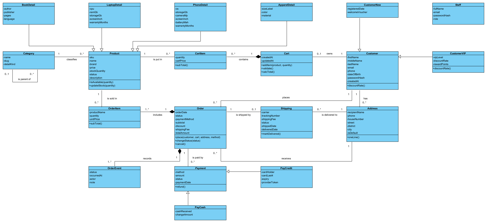

Thay đổi gì
- tên thuộc tính trở thành trường có kiểu (số tiền là
long, đơn vị VND) - trách nhiệm trở thành thao tác:
Cart.validate(): List<CartIssue>,Order.place(…) - trạng thái trở thành kiểu liệt kê kèm bảng chuyển trạng thái
- Payment giữ các lớp con PayCredit và PayCash
Vì sao
- quy tắc nằm cùng chỗ với dữ liệu mà nó kiểm tra (giỏ hàng biết các dòng hàng và giá của mình)
- một bảng chuyển trạng thái thay cho việc kiểm tra trạng thái ở từng màn hình
- Totals ở một chỗ: bước đặt hàng, đơn hàng và test tính ra cùng một con số
Lợi ích
- BR01 đến BR04 và BR09 được unit test mà không cần cơ sở dữ liệu (OrderRulesTest)
- bảng đơn hàng chỉ hiện các hành động được phép: nó hỏi
OrderStatus.next(actor)
2. Biểu đồ hoạt động → tuần tự thiết kế → lúc chạy
UC07 Place Order

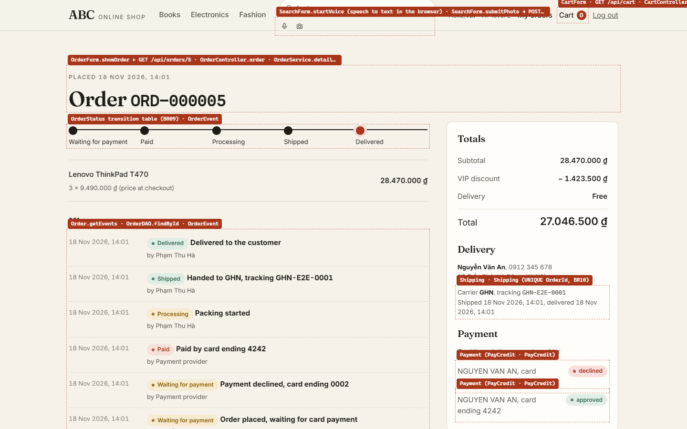
Thay đổi gì
- các bước của làn hệ thống trở thành lời gọi giữa các đối tượng, tách thành OrderController (HTTP, session, đầu vào) và OrderService (một bước của use case)
- tầng lưu trữ trở nên tường minh: mỗi nhóm bảng một DAO
- ranh giới giao dịch xuất hiện dưới dạng
inTransaction(work)
Vì sao
- biểu đồ hoạt động không được biết HTTP hay SQL; tầng thiết kế thì phải biết
- tạo đơn hàng, các dòng hàng, giữ chỗ tồn kho và làm rỗng giỏ hàng phải hoặc cùng thành công, hoặc không việc nào được thực hiện (NFR10)
Lợi ích
- một lần ghi thất bại sẽ rollback tồn kho (test)
- controller gọn: OrderController giảm từ 169 xuống 112 dòng
3. Biểu đồ lớp → ERD được sinh → cơ sở dữ liệu
20 bảng, 122 cột, 22 khóa ngoại, tất cả đều được sinh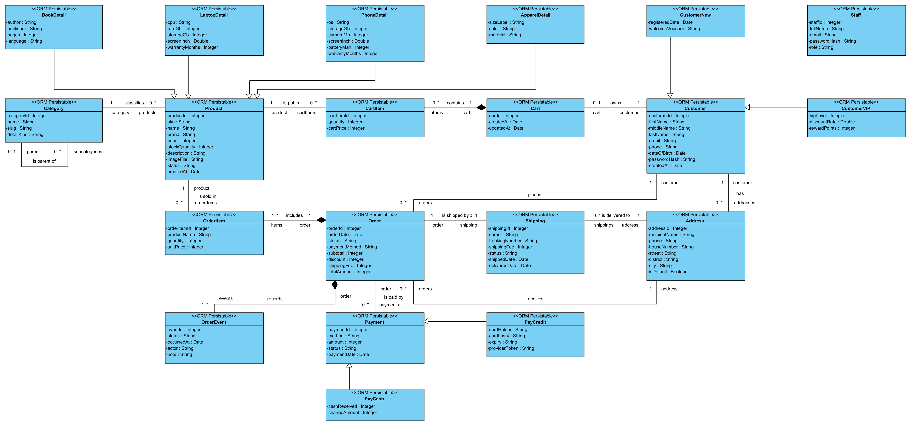

-- rule. compare_schema.py kiểm tra phần còn lại không bị đổi.Thay đổi gì
- A10 → D1: kiểu dữ liệu, id, bản số thuộc tính, tên vai trò, «ORM Persistable» (A10 không có trong file 2: nó trở thành D1)
- D1 → D2: mỗi lớp một bảng, mỗi thuộc tính một cột, mỗi association một khóa ngoại; các loại của Product, Customer và Payment là bảng lớp con có PK = FK (Table per subclass)
- D2 → cơ sở dữ liệu: Tools → DB → Generate Database ghi ra DDL; quy tắc được thêm tay: 34 CHECK, 9 UNIQUE, 5 ON DELETE CASCADE
Vì sao
- bảng, cột và khóa lấy từ mô hình, nên cơ sở dữ liệu không thể lệch khỏi mô hình
- biểu đồ lớp không nói được "giá phải dương"; các quy tắc như vậy được thêm tay và đánh dấu
- cơ sở dữ liệu phải tự bảo vệ các quy tắc, kể cả khi chương trình có lỗi hoặc có người chạy script thủ công
Lợi ích
- không thể có tồn kho âm (test)
- đổi giá không bao giờ làm thay đổi đơn hàng cũ (
OrderItem.UnitPricelà dữ kiện lịch sử) - thêm một loại sản phẩm mới chỉ là một lớp con và một bảng; Product, CartItem và OrderItem không đổi
Tất cả sơ đồ của mô hình VP
Mô hình Visual Paradigm gồm ba file dự án, file sau thêm vào file trước, theo thứ tự trên bảng của giảng viên: PHÂN TÍCH, MÔ HÌNH DỮ LIỆU, THIẾT KẾ. 1_Analysis.vpp có 16 sơ đồ. 2_DataModel.vpp là file 1 cộng D1 và D2 (17 sơ đồ: không có A10, vì A10 đã trở thành D1). 3_Design.vpp là file 2 cộng các sơ đồ thiết kế: 29 sơ đồ. Ba file có tổng cộng 30 sơ đồ khác nhau, mỗi sơ đồ hiện một lần bên dưới, ở file mà nó xuất hiện đầu tiên, kèm số hình trong tiểu luận. Bấm vào một sơ đồ để mở; phím ← và → lật qua tất cả.
1 Phân tích (16 sơ đồ, vp/1_Analysis.vpp)
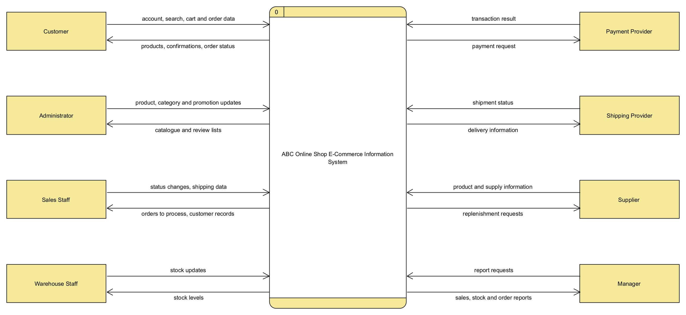

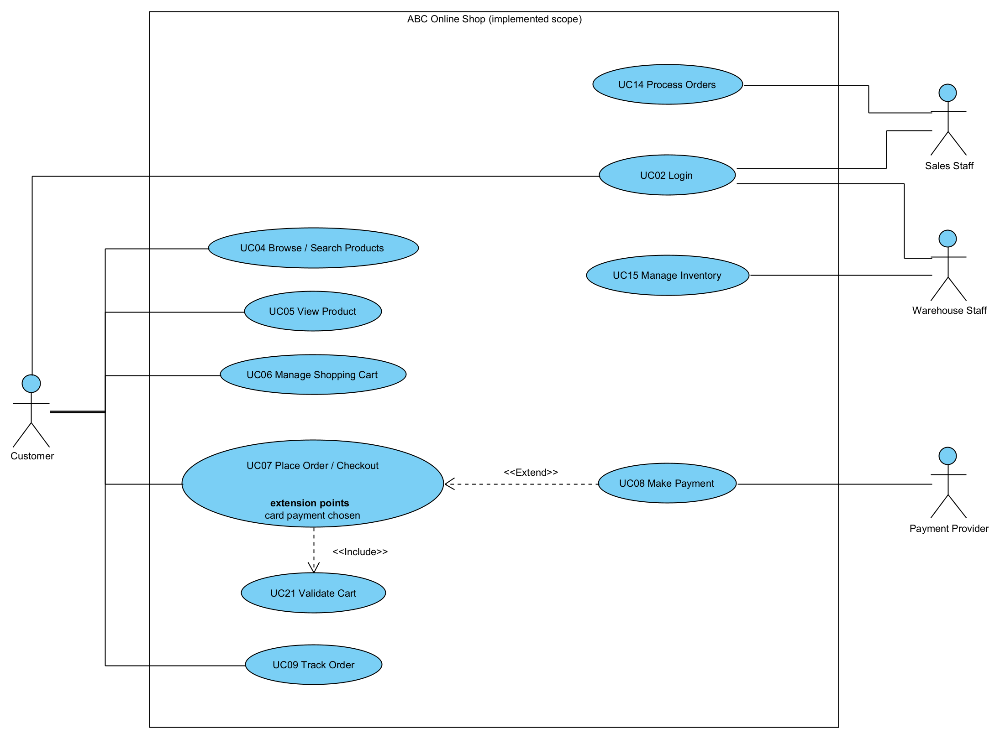
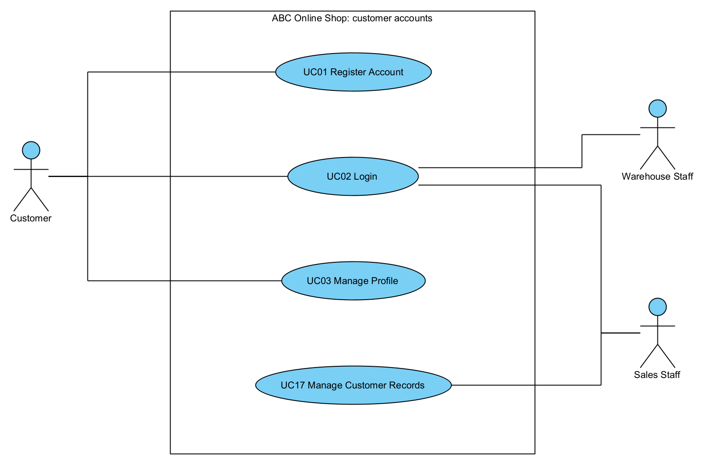


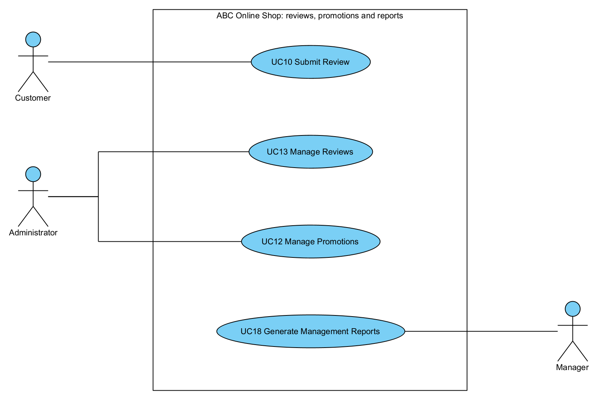
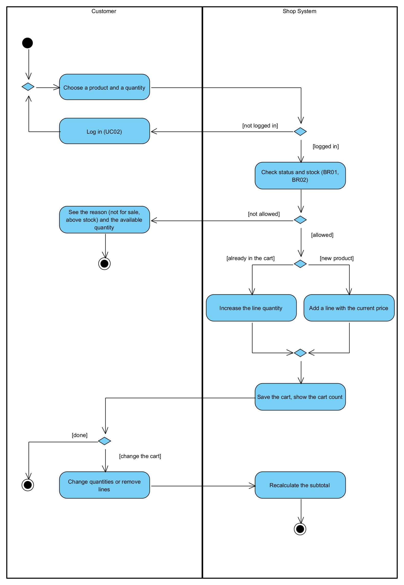
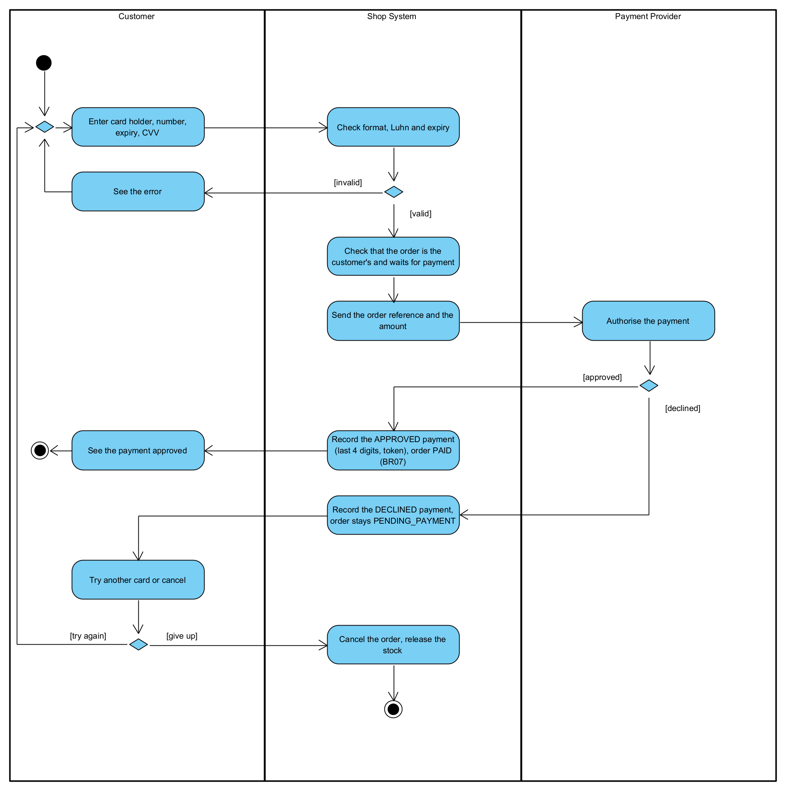


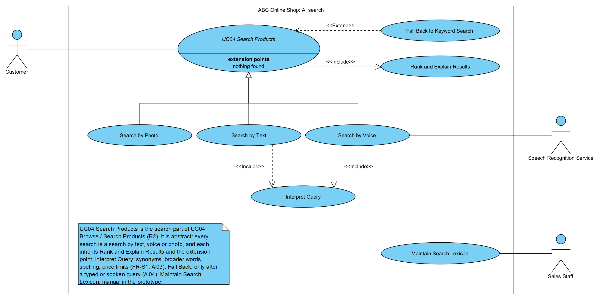

2 Mô hình dữ liệu (thêm D1 và D2 vào file 1, vp/2_DataModel.vpp)
3 Thiết kế (thêm 12 sơ đồ vào file 2, vp/3_Design.vpp)


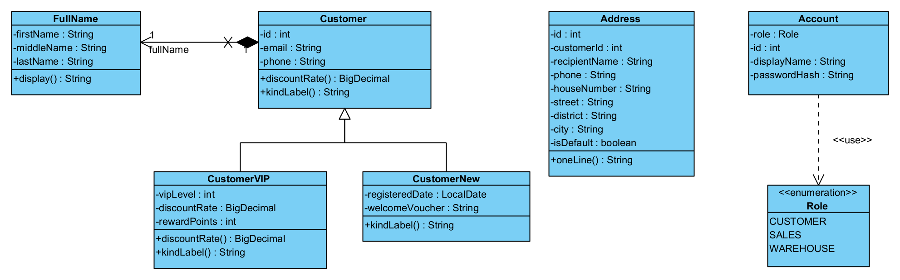


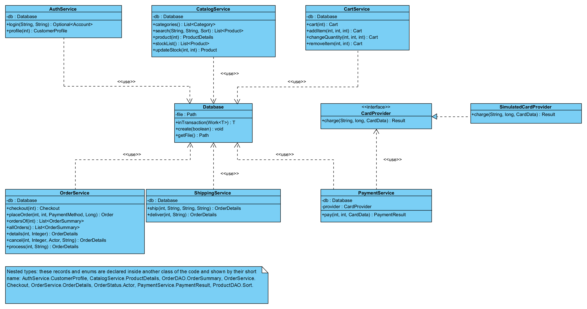

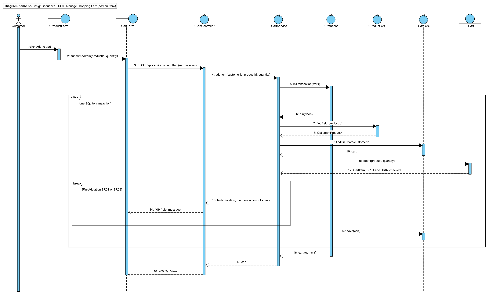


Truy vết từ thiết kế đến mã
Ba use case mang giá trị nghiệp vụ chính. Mỗi ô mở ra tài liệu tương ứng; bảng đầy đủ cho cả chín use case và mọi quy tắc nghiệp vụ nằm trong TRACEABILITY.md.
Place Order (đặt hàng, kèm UC21 Validate Cart)
Make Payment (thanh toán)
Process Orders (xử lý đơn hàng)
Code do Visual Paradigm sinh (Instant Generator): làm thế nào và kết quả ra sao
- Tools → Code → Instant Generator, ngôn ngữ Java.
- Tab Model Elements: chỉ chọn thư mục 5 Design; giữ các tùy chọn mặc định (tiền tố thuộc tính
_, tiền tố tham sốa); chọn thư mục đầu ra. - Generate: VP ghi 80 file Java, mỗi lớp thiết kế một file, vào docs/evidence/vp_codegen_v5 (Hình 5.13 của tiểu luận).
- Kiểm tra: tests/vpgen_vs_code.py đọc các file vừa sinh và code thật: mọi lớp, thuộc tính, phương thức mà VP sinh đều có trong code.
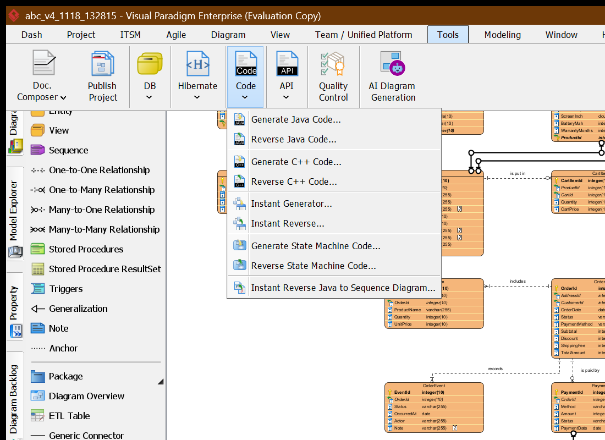
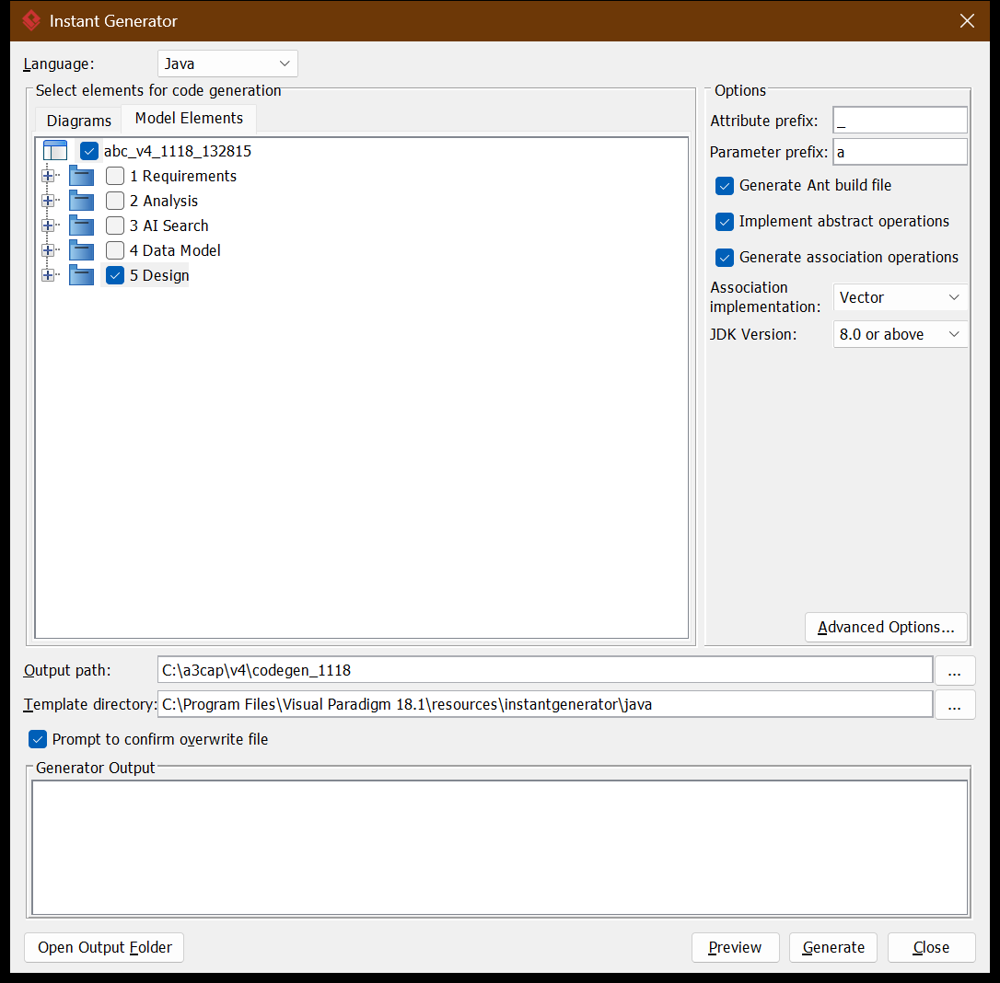

Kết quả (vpgen_vs_code.py)
80 generated files; checked 72 classes, 173 fields, 157 methods, 8 view classes, 25 view operations the code implements every class, field and method that VP generated
Thiết kế và sinh cơ sở dữ liệu
Mô hình dữ liệu có trước mã, và cơ sở dữ liệu được sinh ra từ nó. Biểu đồ lớp D1 đi qua Synchronize to Entity Relationship Diagram để ra D2, được sinh ra chứ không vẽ tay. Sau đó Generate Database ghi ra DDL, và các quy tắc nghiệp vụ được thêm tay vào DDL đó.
Product và bốn loại của nó (Table per subclass)
Product là một lớp có bốn lớp con: BookDetail, LaptopDetail, PhoneDetail và ApparelDetail. Chiến lược kế thừa là Table per subclass (Open Specification → ORM Class Detail → Subclasses...), nên VP tạo một bảng cho Product và một bảng cho mỗi loại. Cột khóa ProductId của mỗi loại vừa là khóa chính vừa là khóa ngoại tới Product, với ON DELETE CASCADE thêm tay. Category.DetailKind (BOOK, LAPTOP, PHONE, APPAREL) chỉ ra loại. Customer (CustomerVIP, CustomerNew) và Payment (PayCash, PayCredit) được lưu theo cách tương tự.
Trong mã, ProductDAOImpl.asSubclass chọn lớp con từ Category.DetailKind, và mỗi lớp con ghi đè specs(): trang sản phẩm hiện các thuộc tính của loại của nó.
Phương án đã loại: mặc định của VP, Table per class hierarchy (một bảng với nhiều cột để trống); mỗi loại cụ thể một bảng (các cột của Product bị chép bốn lần, và CartItem, OrderItem phải có một khóa ngoại cho từng loại).
Từ mô hình đến cơ sở dữ liệu
1. D1 → Synchronize to Entity Relationship Diagram → D2 (được sinh, không vẽ tay). 2. Tools → DB → Generate Database (SQLite, Generate DDL được chọn, Export to database không chọn): VP ghi db/vp/vp_ddl.sql. 3. db/make_schema.py sao chép mọi CREATE TABLE của DDL và thêm tay các quy tắc nghiệp vụ, mỗi dòng đánh dấu "-- rule": 34 CHECK, 9 UNIQUE, 5 ON DELETE CASCADE. Kết quả là db/schema.sql. 4. db/compare_schema.py kiểm tra schema.sql vẫn có đúng các bảng, cột, kiểu, NOT NULL, khóa và khóa ngoại đã sinh. 5. Khi khởi động, ứng dụng tạo file SQLite từ schema.sql cộng với dữ liệu mẫu.


Từ biểu đồ lớp D1 ra cơ sở dữ liệu: làm thế nào và kết quả ra sao
- Biểu đồ lớp D1 (file 2). Các lớp của A10 kèm kiểu, id, bản số của thuộc tính (1 = NOT NULL, 0..1 = NULL), tên vai trò và bản số ở cả hai đầu của mọi association, và stereotype «ORM Persistable». Với Product, Customer và Payment: Open Specification → ORM Class Detail → Subclasses... → Table per subclass.
- Synchronize. Chuột phải vào biểu đồ → Synchronize to Entity Relationship Diagram. VP hỏi khóa chính của từng bảng: chọn thuộc tính id, không chọn Auto Generate. Kết quả là D2: 20 bảng, 122 cột, 22 khóa ngoại, 19 cột cho phép NULL. Sau đó sửa tay: đổi tên cột khóa ngoại (CategoryCategoryId → CategoryId, tham chiếu của Category tới chính nó → ParentId), đổi tên bảng Order thành Orders (ORDER là từ khóa SQL), sắp xếp bố cục.
- Generate Database (Tools → DB → Generate Database): trong Database Options chọn SQLite; Generate DDL được chọn, Export to database không chọn.
- Kết quả. VP ghi db/vp/vp_ddl.sql: chỉ có khóa, kiểu dữ liệu, NOT NULL và khóa ngoại. db/make_schema.py sao chép mọi CREATE TABLE và thêm tay các quy tắc nghiệp vụ, mỗi dòng đánh dấu "-- rule" (34 CHECK, 9 UNIQUE, 5 ON DELETE CASCADE). Đó là db/schema.sql, script mà ứng dụng chạy khi khởi động (dữ liệu demo lấy từ seed.sql).
- Kiểm tra. db/compare_schema.py kiểm tra schema.sql vẫn có đúng các bảng, cột, kiểu, NOT NULL, khóa và khóa ngoại đã sinh.
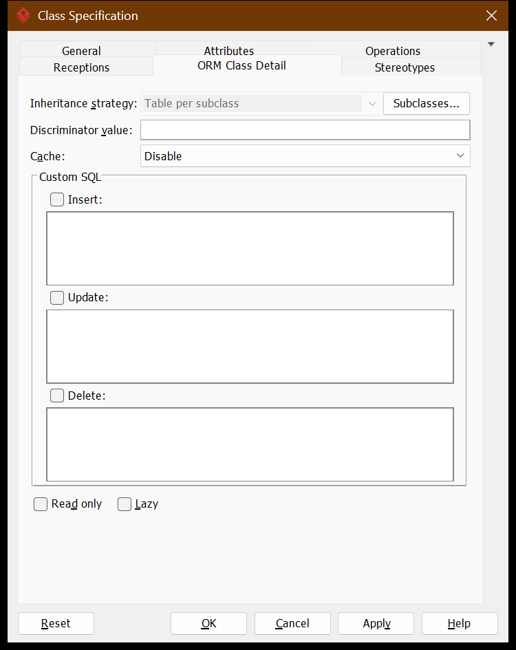
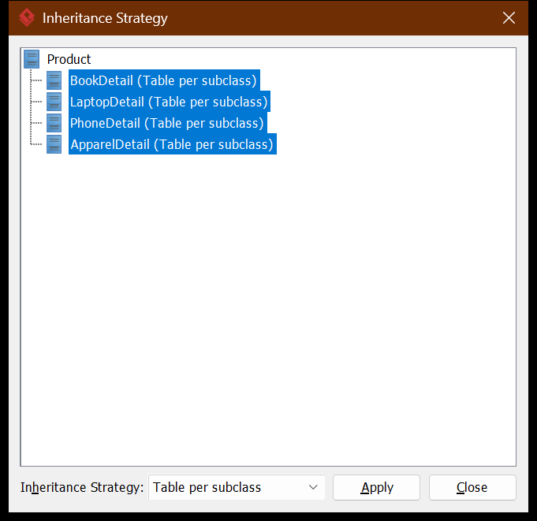
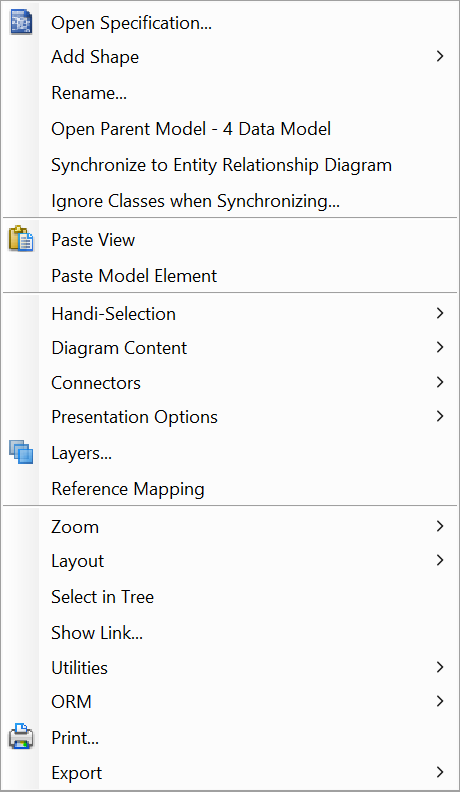
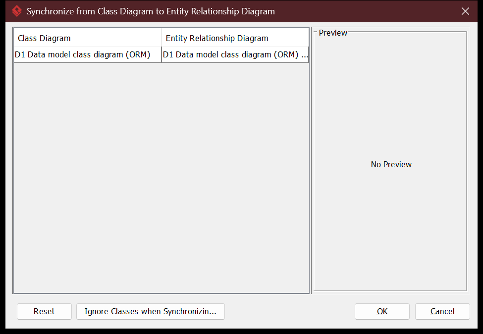

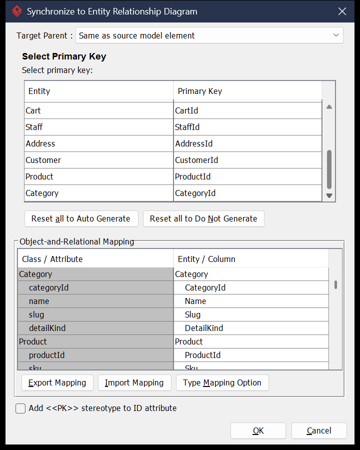
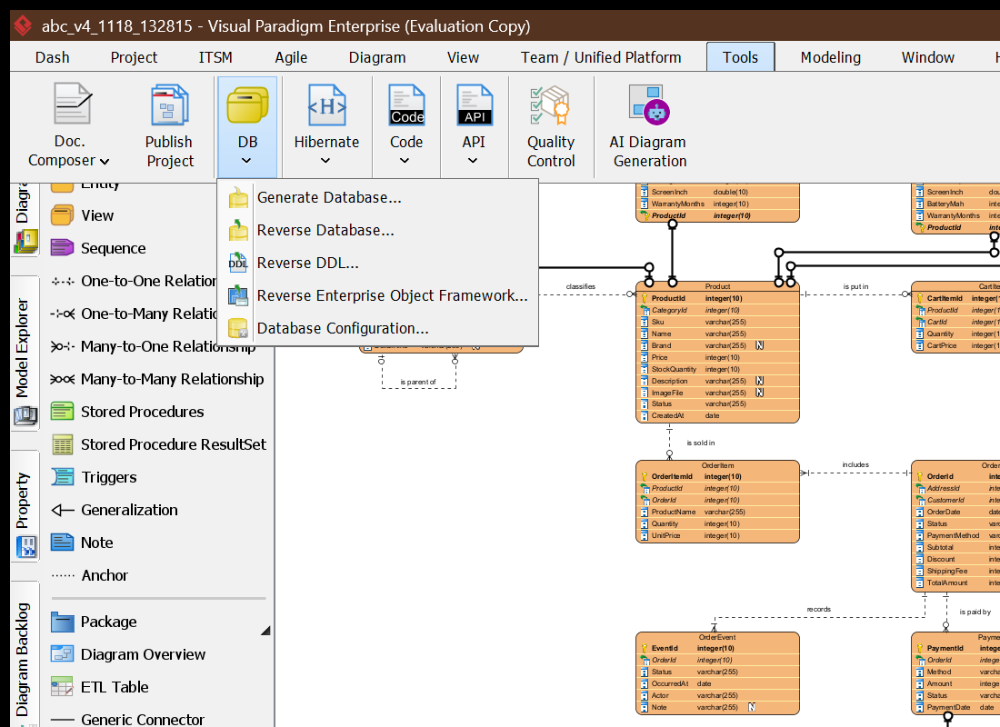


DDL được sinh chứa gì và điều gì được thêm tay (đọc từ vp_ddl.sql và schema.sql)
| Bảng | Số cột | Khóa chính | Cột cho phép NULL | Khóa ngoại (được sinh) | UNIQUE (quy tắc) | CHECK (quy tắc) | ON DELETE CASCADE (quy tắc) |
|---|---|---|---|---|---|---|---|
Category | 5 | CategoryId | 2 | 1 | 1 | 1 | 0 |
Product | 11 | ProductId | 3 | 1 | 1 | 3 | 0 |
BookDetail | 5 | ProductId | 3 | 1 | 0 | 1 | 1 |
LaptopDetail | 6 | ProductId | 0 | 1 | 0 | 3 | 1 |
PhoneDetail | 7 | ProductId | 2 | 1 | 0 | 4 | 1 |
ApparelDetail | 4 | ProductId | 1 | 1 | 0 | 0 | 1 |
Customer | 9 | CustomerId | 3 | 0 | 1 | 0 | 0 |
Address | 9 | AddressId | 1 | 1 | 0 | 1 | 0 |
CustomerVIP | 4 | CustomerId | 0 | 1 | 0 | 3 | 0 |
CustomerNew | 3 | CustomerId | 1 | 1 | 0 | 0 | 0 |
Staff | 5 | StaffId | 0 | 0 | 1 | 1 | 0 |
Cart | 4 | CartId | 0 | 1 | 1 | 0 | 0 |
CartItem | 5 | CartItemId | 0 | 2 | 1 | 2 | 1 |
Orders | 10 | OrderId | 0 | 2 | 0 | 6 | 0 |
OrderItem | 6 | OrderItemId | 0 | 2 | 1 | 2 | 0 |
OrderEvent | 6 | EventId | 1 | 1 | 0 | 0 | 0 |
Payment | 6 | PaymentId | 0 | 1 | 0 | 3 | 0 |
PayCash | 3 | PaymentId | 0 | 1 | 0 | 2 | 0 |
PayCredit | 5 | PaymentId | 1 | 1 | 0 | 0 | 0 |
Shipping | 9 | ShippingId | 1 | 2 | 2 | 2 | 0 |
| Tổng | 122 | 19 | 22 | 9 | 34 | 5 |
Một bảng đúng như Visual Paradigm đã ghi (vp_ddl.sql)
CREATE TABLE Orders (OrderId INTEGER NOT NULL PRIMARY KEY AUTOINCREMENT, AddressId integer(10) NOT NULL, CustomerId integer(10) NOT NULL, OrderDate date NOT NULL, Status varchar(255) NOT NULL, PaymentMethod varchar(255) NOT NULL, Subtotal integer(10) NOT NULL, Discount integer(10) NOT NULL, ShippingFee integer(10) NOT NULL, TotalAmount integer(10) NOT NULL, FOREIGN KEY(CustomerId) REFERENCES Customer(CustomerId), FOREIGN KEY(AddressId) REFERENCES Address(AddressId));
Cũng bảng đó trong schema.sql: các quy tắc được thêm tay
CREATE TABLE Orders (
OrderId INTEGER NOT NULL PRIMARY KEY AUTOINCREMENT,
AddressId integer(10) NOT NULL,
CustomerId integer(10) NOT NULL,
OrderDate date NOT NULL,
Status varchar(255) NOT NULL CHECK (Status IN ('PENDING_PAYMENT', 'PLACED', 'PAID', 'PROCESSING', 'SHIPPED', 'DELIVERED', 'CANCELLED')), -- rule
PaymentMethod varchar(255) NOT NULL CHECK (PaymentMethod IN ('CARD', 'COD')), -- rule
Subtotal integer(10) NOT NULL CHECK (Subtotal > 0), -- rule
Discount integer(10) NOT NULL CHECK (Discount >= 0), -- rule
ShippingFee integer(10) NOT NULL CHECK (ShippingFee >= 0), -- rule
TotalAmount integer(10) NOT NULL CHECK (TotalAmount = Subtotal - Discount + ShippingFee), -- rule
FOREIGN KEY (CustomerId) REFERENCES Customer (CustomerId),
FOREIGN KEY (AddressId) REFERENCES Address (AddressId)
);So sánh với schema.sql (compare_schema.py)
generated by Visual Paradigm: 20 tables, 122 columns, 22 foreign keys schema.sql: same tables, columns, types, NOT NULL, primary and foreign keys: True added by hand in schema.sql: 34 CHECK, 9 UNIQUE, 5 ON DELETE CASCADE seed data in the VP DDL database: 106 rows, foreign key violations: 0 seed data in the schema.sql database: 106 rows, foreign key violations: 0
-- rule; mọi phần còn lại của schema.sql là bản sao các bảng đã sinh (mục 4.3 và 5.3 của tiểu luận).Ánh xạ: mô hình thiết kế → bảng → mã
| Thiết kế (VP) | Bảng | Ràng buộc toàn vẹn | Lớp model / DAO |
|---|---|---|---|
| Category (cây) | Category | Slug UNIQUE, ParentId là khóa ngoại tới Category | Category / ProductDAO.categories |
| Product ◁ BookDetail, LaptopDetail, PhoneDetail, ApparelDetail | Product + BookDetail, LaptopDetail, PhoneDetail, ApparelDetail | Sku UNIQUE, StockQuantity ≥ 0, khóa lớp con ProductId = PK và FK (CASCADE) | Product / ProductDAOImpl |
| Cart ◆ CartItem | Cart, CartItem | Cart.CustomerId UNIQUE, UNIQUE(CartId, ProductId) | Cart / CartDAOImpl |
| Order ◆ OrderItem, OrderEvent | Orders, OrderItem, OrderEvent | Status CHECK, CHECK công thức tổng tiền, UNIQUE(OrderId, ProductId) | Order / OrderDAOImpl |
| Payment ◁ PayCredit, PayCash | Payment, PayCredit, PayCash | khóa lớp con PaymentId = PK và FK; không có cột số thẻ | Payment / PaymentDAOImpl |
| Shipping | Shipping | OrderId UNIQUE (BR10), TrackingNumber UNIQUE | Shipping / ShippingDAOImpl |
| Customer ◁ CustomerVIP, CustomerNew | Customer, CustomerVIP, CustomerNew, Address | Email UNIQUE, khóa lớp con CustomerId = PK và FK | Customer / CustomerDAOImpl |
Tìm kiếm AI (Chương 3)
Khách hàng không gõ đúng tên sản phẩm thì không tìm thấy gì. Tìm kiếm AI hiểu các từ liên quan, lỗi chính tả, giới hạn giá, câu nói bằng giọng nói và cả ảnh chụp, đồng thời cho biết vì sao từng sản phẩm được tìm ra. Đây là một thành phần của hệ thống thông tin như mọi thành phần khác: được đặc tả, mô hình hóa, thiết kế, kiểm thử và đo đạc.
Văn bản
Mô hình không gian vector TF-IDF học từ danh mục sản phẩm; một từ điển các từ liên quan; sửa lỗi chính tả bằng khoảng cách Damerau-Levenshtein; "under 10 million" trở thành bộ lọc giá cứng (AI03).
Giọng nói và ảnh
Chuyển giọng nói thành văn bản ngay trong trình duyệt, cho sửa trước khi gửi (FR-S4). Ảnh chụp được so với ảnh sản phẩm bằng histogram màu, hướng cạnh và đường bao (FR-S5); ảnh không bao giờ được lưu (AI05).
Độ tin cậy
Mỗi kết quả đều nêu lý do (AI02); không có kết quả thì chạy tìm kiếm theo từ khóa và trang báo rõ điều đó (AI04); sản phẩm hết hàng bị giảm 20 % điểm (AI07).
Đo so với tìm kiếm theo từ khóa
| Bộ kiểm thử | Chỉ số | Tìm kiếm từ khóa | Tìm kiếm AI |
|---|---|---|---|
| 30 truy vấn đã gán nhãn | hit@1 · MRR · tỷ lệ không có kết quả | 0.23 · 0.23 · 0.77 | 0.97 · 0.97 · 0.03 |
| 84 ảnh (cắt, xoay, tối hơn, nền khác) | top-1 · top-3 | (không có tìm kiếm bằng ảnh) | 0.93 · 1.00 |


Demo trực tiếp
Khởi động cửa hàng trên một cơ sở dữ liệu mới, rồi theo dõi một đơn hàng từ danh mục sản phẩm đến tận cửa nhà khách hàng.
nút này chạy CHAY_DEMO.bat khi máy chủ chưa chạy (Java 17, cơ sở dữ liệu demo mới)
1. Khách hàng mua
Đăng nhập bằng an.nguyen@example.com (VIP). Laptops → MacBook Air → Add to cart. Đặt hàng: giảm 5 %, miễn phí giao hàng.
2. Thanh toán lỗi, rồi thành công
Thẻ 4000 0000 0000 0002 bị từ chối, đơn hàng chờ. Thẻ 4242 4242 4242 4242 → PAID.
3. Nhân viên bán hàng xử lý đơn
Đăng nhập bằng sales@example.com. Bảng đơn hàng: Start processing → Ship (đơn vị vận chuyển, mã vận đơn) → Mark delivered.
4. Khách hàng theo dõi
Với tài khoản của An: My orders → đơn hàng hiện dòng thời gian và mã vận đơn. Alt+L mở design lens.
Tìm kiếm AI: gõ red sneakers under 3 million hoặc macbok air; nút máy ảnh chọn một ảnh từ tests/search/photos. Mọi mật khẩu: demo1234. Kho: warehouse@example.com (tồn kho, BR12 từ chối giá trị âm). Tính kế thừa trong cửa hàng: mở một sản phẩm của mỗi danh mục (sách, laptop, điện thoại, quần áo); trang hiện các thuộc tính của lớp con tương ứng. Các ảnh chụp màn hình bên dưới lấy từ lần chạy tự động trên Edge.


Kiểm chứng và kết luận
| Bằng chứng | Chứng minh điều gì | Kết quả | Mở |
|---|---|---|---|
| JUnit, quy tắc của model | BR01 đến BR04, BR07, BR09 đến BR11, không cần cơ sở dữ liệu | 9 đạt | OrderRulesTest |
| JUnit, luồng đặt hàng | controller → service → DAO → SQLite: đơn vị hàng cuối cùng, quyền sở hữu, vai trò, CHECK, rollback | 5 đạt | CheckoutFlowTest |
| JUnit, tìm kiếm AI | AT11 đến AT17 trên một file SQLite thật: từ đồng nghĩa, chính tả, lọc giá, phương án dự phòng, giới hạn đầu vào, ảnh | 10 đạt | SearchTest |
| Smoke test API | mọi use case đã cài đặt qua HTTP, có kiểm tra cơ sở dữ liệu | 36 / 36 | smoke_api.py |
| End-to-end trên Edge | góc nhìn của người dùng với UC02 đến UC15, dữ liệu được kiểm tra qua API | 30 / 30 | kết quả · script |
| Thiết kế so với mã | 72 lớp Java, 169 thuộc tính, 134 thao tác; 8 lớp view, 25 thao tác của view; 48 lời gọi trong biểu đồ tuần tự; package ai không import gì khác | khớp | design_vs_code.py |
| Mã do VP sinh so với mã | 80 file do Instant Generator của VP sinh ra: 173 trường, 157 phương thức, tất cả đều có trong mã | khớp | vpgen_vs_code.py · các file được sinh |
| Chất lượng tìm kiếm AI | 30 truy vấn đã gán nhãn, 84 ảnh | hit@1 0.97 · ảnh top-1 0.93 | search_eval.txt |
| DDL của VP so với schema | DDL do VP sinh từ mô hình dữ liệu và schema.sql có cùng 20 bảng, 122 cột, kiểu, NOT NULL, khóa và 22 khóa ngoại; phần thêm duy nhất là các quy tắc: 34 CHECK, 9 UNIQUE, 5 ON DELETE CASCADE | cùng các bảng | compare_schema.py |
Các quyết định chính
Product với bốn lớp con (Table per subclass); bảng do Synchronize sinh ra, quy tắc thêm tay; tạo đơn hàng trước khi thanh toán; một bảng chuyển trạng thái duy nhất cho trạng thái đơn; mỗi thao tác của service là một giao dịch; lời gọi nhà cung cấp nằm ngoài giao dịch; tồn kho được giữ chỗ bằng UPDATE có điều kiện. Lý do: DESIGN.md và chương 4, 5 của tiểu luận.
Hạn chế
Mới cài đặt 9 trong 21 use case; dùng SQLite và nhà cung cấp thanh toán mô phỏng; tìm kiếm bằng ảnh chưa được thử với một ảnh khác của cùng một mẫu sản phẩm; từ điển các từ liên quan chỉ là một danh sách trong mã; chưa có CSRF token và chưa giới hạn số lần đăng nhập. Hướng cải tiến: mục 6.13 của tiểu luận.
Vẽ trực tiếp trong Visual Paradigm
Cách vẽ các biểu đồ trong VP: với mỗi loại biểu đồ, thanh công cụ VP thật với các công cụ đã dùng, đánh số theo thứ tự sử dụng, cùng các bước kéo thả.
Biểu đồ use case (R2, R3)

- System: kéo một hình chữ nhật lớn, đặt tên "ABC Online Shop E-Commerce Information System".
- Actor: thả Customer bên trái ranh giới hệ thống, nhân viên và các nhà cung cấp bên phải.
- Use Case: thả vào trong ranh giới, đặt tên "UC07 Place Order / Checkout" (VP tự đưa nó vào hệ thống).
- Association: bấm vào actor, rồi bấm vào use case (hoặc kéo biểu tượng Resource Catalog của actor tới use case).
- Include: từ UC07 gốc tới UC21 được include (mũi tên chỉ về UC21).
- Extend: từ UC08 mở rộng tới UC07 gốc. Sau đó chuột phải UC07 → Add → Extension Point "card payment chosen"; bấm đúp vào extend → Condition "payment method = CARD".
Generalization (cùng palette): kéo từ phần tử con tới phần tử cha, ví dụ từ Search by Text tới use case trừu tượng UC04 Search Products (AI1), hoặc từ Sales Staff tới Staff (R2). Use case cha được đặt là trừu tượng trong specification của nó (Abstract).
Biểu đồ hoạt động có swimlane (A1 đến A5)

- Horizontal Swimlane, tam giác nhỏ → Vertical Swimlane: thả vào, chuột phải → Add Partition, đặt tên các làn là Customer, Shop System.
- Initial Node trong làn Customer.
- Action: "Open checkout", "Validate the cart: price, status, stock (UC21)" trong đúng làn.
- Decision Node (tam giác nhỏ → Merge Node nơi các nhánh gặp lại nhau). Không ghi chữ trong hình thoi.
- Activity Final Node cho mỗi điểm kết thúc.
- Control Flow: từ nút này sang nút khác; trên luồng đi ra từ decision, bấm đúp → Guard, ví dụ "blocking issue" (VP hiển thị là [blocking issue]).
Biểu đồ tuần tự (G5 đến G7, G9 thiết kế)

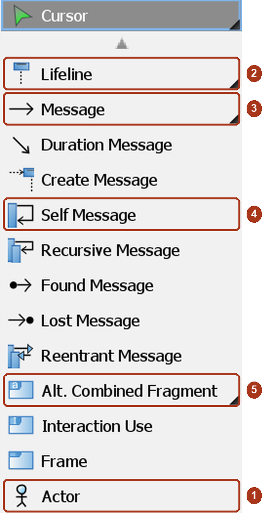
- Actor: Customer ở bên trái.
- Lifeline: mở specification của lifeline → Base classifier → lớp thiết kế (OrderController), VP hiển thị ": OrderController"; sau đó chuột phải → Stereotypes → vai trò theo tầng (form: boundary; controller, service, DAO: control; lớp mô hình: entity), VP vẽ biểu tượng tương ứng.
- Message: kéo từ đường nét đứt của bên gửi tới bên nhận; gõ lời gọi "placeOrder(customerId, addressId, method, expectedTotal)". Với phản hồi: vẽ một Message ngược lại, mở specification của nó → Action Type → Return (khi đó VP vẽ nét đứt).
- Self Message cho lời gọi tới chính nó (kiểm tra định dạng và hạn của thẻ).
- Alt. Combined Fragment: kéo bao quanh các message; chuột phải → Operator (alt, loop, opt, critical); chuột phải → Add Operand cho "else"; bấm đúp vào operand → Guard.
Tạo đối tượng (Order, CartItem): một Message có Action Type là Create; lifeline được tạo bắt đầu tại message đó. Lối thoát khi lỗi (thẻ bị từ chối, hết hàng): Combined Fragment với operator break. Thanh kích hoạt chạy từ lời gọi lifeline nhận được tới message cuối cùng của nó.
Biểu đồ lớp (A10 phân tích, D1 mô hình dữ liệu, G1 đến G4b, G8 thiết kế)

- Package (biểu đồ phân tầng G1): thả một khung cho mỗi tầng, đặt tên service, dao, …
- Class: đặt tên; chuột phải → Add → Attribute "-total : long" (Alt+Shift+A) hoặc Operation "+place(…) : Order" (Alt+Shift+O); stereotype interface hoặc enumeration lấy từ chuột phải → Stereotypes.
- Association (tam giác nhỏ → Composition cho Order ◆ OrderItem): kéo từ toàn thể tới bộ phận; bấm đúp vào hai đầu để đặt bản số (1, 1..*) và vai trò (items).
- Generalization: kéo từ lớp con PayCredit tới Payment (tam giác nhỏ), tương tự BookDetail tới Product.
- Dependency: từ lớp sử dụng tới lớp hoặc package được dùng; chuột phải → Stereotypes → use.
D1 (mô hình dữ liệu) là A10 được vẽ lại với những gì cơ sở dữ liệu cần: mỗi thuộc tính có kiểu và bản số (1 = NOT NULL, 0..1 = NULL), mỗi lớp không phải lớp con có một thuộc tính id, mỗi đầu của mỗi association có bản số và tên vai trò, mỗi lớp có stereotype ORM Persistable (chuột phải → Stereotypes). Sau đó mở specification của Product (và của Customer, Payment) → tab ORM Class Detail → Subclasses... → chọn các lớp con → Table per subclass → Apply.
Biểu đồ ngữ cảnh (R1)

- External Entity: Customer, Sales Staff, Payment Provider…
- Process: một tiến trình cho cả hệ thống, đặt theo tên hệ thống.
- Data Flow: từ nguồn tới đích, đặt tên cho dữ liệu đi qua ranh giới; mỗi tác nhân ngoài có một luồng vào và một luồng ra.
Biểu đồ ngữ cảnh chỉ vẽ hệ thống và những gì nằm ngoài nó, nên không dùng công cụ Data Store (3).
Mô hình dữ liệu (D2 được sinh, không vẽ tay), cơ sở dữ liệu và sinh mã
- Vẽ D1 như một biểu đồ lớp (xem Biểu đồ lớp ở trên): kiểu, id, bản số, tên vai trò, «ORM Persistable», Table per subclass.
- Synchronize: chuột phải vào nền của D1 → Synchronize to Entity Relationship Diagram → OK. Trong hộp thoại Select Primary Key, với mỗi bảng chọn thuộc tính id thay cho Auto Generate → OK. VP tạo D2 với các bảng, cột và khóa ngoại; bạn không vẽ entity hay relationship nào. Sau đó đổi tên các cột khóa ngoại (CategoryCategoryId → CategoryId, tham chiếu của Category tới chính nó → ParentId), đổi tên bảng Order thành Orders (ORDER là từ khóa SQL) và sắp xếp bố cục.
- Sinh cơ sở dữ liệu: ribbon Tools → DB → Generate Database; trong hộp thoại bấm Database Options, chọn SQLite; chọn Generate DDL, không chọn Export to database; chọn đường dẫn đầu ra → OK. VP ghi DDL (db/vp/vp_ddl.sql). Sau đó chạy db/make_schema.py (thêm tay các quy tắc) và db/compare_schema.py (kiểm tra kết quả).
- Sinh mã: Tools → Code → Instant Generator, Java, tab Model Elements, đánh dấu thư mục 5 Design, giữ các tùy chọn mặc định, chọn thư mục đầu ra, Generate.